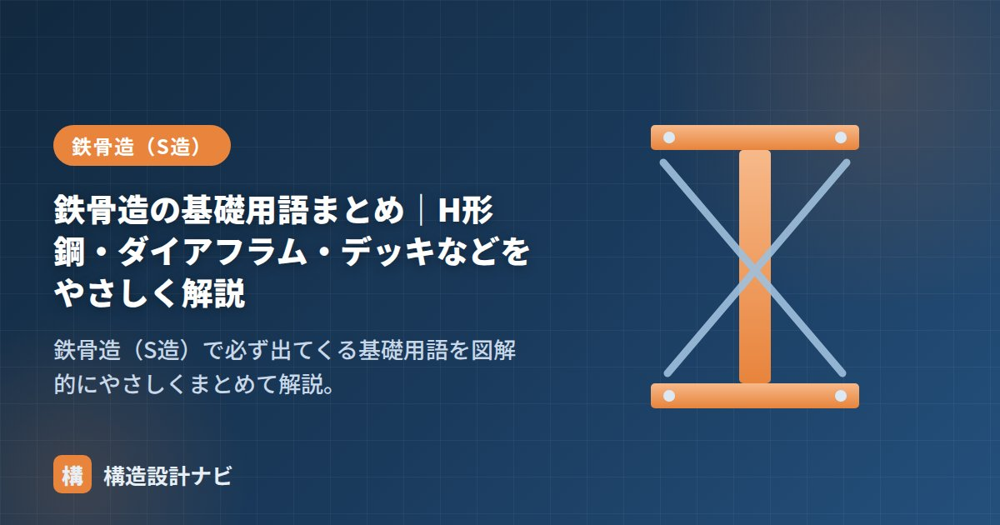

鉄骨造の基礎用語まとめ｜H形鋼・ダイアフラム・デッキなどをやさしく解説

鉄骨造（S造）の図面や現場では、独特の用語が次々に登場します。ここでは初学者がまず押さえるべき基礎用語を、「部材」「接合部」「床まわり」「二次部材」の4グループに分けて整理します。
① 主要な部材
| 用語 | 意味 |
|---|---|
| H形鋼 | 断面がH形の鋼材。最も多用される。梁・柱に使う。 |
| フランジ | H形鋼の上下の水平な板。曲げに効く（中立軸から遠いため）。 |
| ウェブ | H形鋼の中央の縦の板。主にせん断力を負担する。 |
| 角形鋼管（コラム） | 断面が角形の鋼管。柱に多用。どの方向にも強く座屈に有利。 |
| 鋼管（円形） | 丸い鋼管。トラスやブレースなどに使う。 |
② 接合部まわり
| 用語 | 意味 |
|---|---|
| 高力ボルト | 強く締め付け、摩擦力で力を伝える接合用ボルト。現場接合の主流。 |
| ダイアフラム | 柱梁接合部で、梁フランジの力を柱に伝えるための水平の板。通しダイアフラム形式が一般的。 |
| ガセットプレート | ブレースや小梁などを取り付けるための継手用の鋼板。 |
| ベースプレート | 柱の脚部にある鋼板。柱の力を基礎に伝える。 |
| アンカーボルト | ベースプレートと基礎コンクリートを緊結するボルト。柱の引き抜きに抵抗する。 |
| 仕口・継手 | 仕口＝部材が交わる接合部（柱と梁など）。継手＝同じ部材をつなぐ部分。 |
| 開先（かいさき） | 溶接で母材どうしを溶け込ませるために加工した溝。 |
柱梁接合部は地震時に力が集中する急所です。「柱・梁が壊れる前に接合部が壊れない」よう、ダイアフラムや溶接・ボルトを十分な耐力で設計します（保有耐力接合）。
③ 床まわり
| 用語 | 意味 |
|---|---|
| デッキプレート | 波形の薄い鋼板。床コンクリートの型枠兼補強として梁の上に敷く。 |
| スタッドボルト（頭付きスタッド） | 鋼梁とコンクリート床を一体化させる（ずれ止め）ための突起。合成梁に使う。 |
| 合成梁 | 鋼梁とコンクリート床を一体で働かせ、効率を高めた梁。 |
④ 二次部材・水平抵抗
| 用語 | 意味 |
|---|---|
| 母屋（もや） | 屋根の折板や仕上げを支える、小梁状の二次部材。 |
| 胴縁（どうぶち） | 外壁材を取り付けるための下地材。柱の弱軸方向の補剛も兼ねる。 |
| ブレース | 柱梁の構面に入れる斜材。軸力で水平力に抵抗する。 |
| スチフナー | ウェブの座屈を防ぐために入れる補剛リブ。 |
全体像は「鉄骨造（S造）とは？」、鋼材そのものの性質は「鉄骨の材料」、断面の働きは「断面二次モーメント」をどうぞ。
若手の担当者と現場に行くと、図面の「仕口」と「継手」を混同したまま打合せに臨んでしまうことがあります。同じ接合部でも、部材が交わるのか同じ部材をつなぐのかで検討の中身がまったく違うので、用語の意味を体で覚えてもらうところから指導しています。
H形鋼と柱梁接合部の各部名称（図解）
用語は図と結びつけて覚えると定着します。もっとも登場頻度の高いH形鋼と、柱梁接合部の構成を図で確認しましょう。
図面での鋼材の表記の読み方
構造図では鋼材を記号と寸法で表記します。表記を読めると、図面から断面がイメージできるようになります。
| 表記の例 | 意味 |
|---|---|
| H-400×200×8×13 | H形鋼。せい400mm × 幅200mm × ウェブ厚8mm × フランジ厚13mm |
| □-400×400×16 | 角形鋼管。400mm角 × 板厚16mm（柱によく使う） |
| φ-267.4×9 | 円形鋼管。外径267.4mm × 板厚9mm |
| L-75×75×6 | 山形鋼（アングル）。75mm × 75mm × 厚6mm |
| PL-12 | プレート（鋼板）。板厚12mm |
| M22（F10T） | 高力ボルト。呼び径22mm、強度区分F10T |
寸法の並びは「せい×幅×ウェブ厚×フランジ厚」の順です。H-400×200なら、せい（高さ）が400mmで幅が200mmの細長い断面。梁として使うときは、このせいの方向を鉛直にして曲げに抵抗させます。もし横倒しに使うと、断面二次モーメントが大幅に小さくなり、まったく性能が出ません。
よくある質問
Q1. ダイアフラムには種類がありますか？
主に3種類あります。通しダイアフラム形式は、柱を接合部で切断してダイアフラムを挟み込む方式で、力の伝達が確実なため現在もっとも一般的です。内ダイアフラム形式は角形鋼管の内部に板を入れる方式で、外観がすっきりしますが製作が難しくなります。外ダイアフラム形式は柱の外周に板を回す方式で、柱を切断せずに済みます。それぞれ製作性と力の伝達性のバランスで使い分けられます。
Q2. スチフナーは何のために入れるのですか？
ウェブなどの薄い板が局部的に座屈するのを防ぐための補剛材です。梁に集中荷重がかかる位置や、支点部でウェブがつぶれるおそれがある箇所に、板を垂直に溶接して入れます。板が薄く高さのある部材ほど座屈しやすいため、幅厚比の検討結果に応じて必要な位置と間隔を決めます。
Q3. デッキプレートは構造材として計算に入れられますか？
使い方によります。型枠としてのみ使い、コンクリート硬化後は考慮しない場合（型枠デッキ）と、デッキ自体を引張材として構造耐力に算入する場合（合成デッキ・鉄筋トラス付きデッキ）があります。後者は認定を取得した製品を、認定条件どおりの仕様で使うことが前提になります。また、梁とスラブを一体化させて合成梁とする場合は、頭付きスタッドによるずれ止めが必要です。
まとめ
- H形鋼はフランジ（曲げ担当）とウェブ（せん断担当）でできている。
- 接合部はダイアフラム・ガセット・ベースプレート＋高力ボルト/溶接が基本。
- 床はデッキ＋スタッド（合成梁）、屋根・外壁は母屋・胴縁で支える。